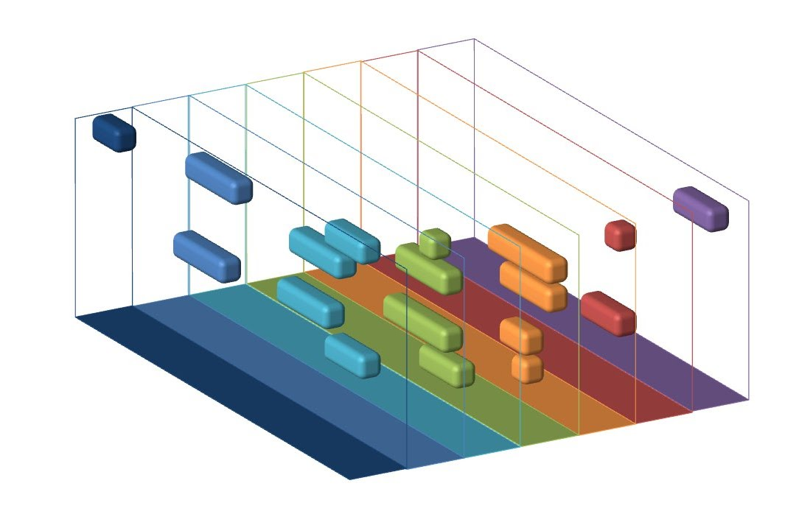

Porque usar este sistema
Tiddy es una herramienta sencilla y eficiente para la gestión de tareas, diseñada específicamente para permitir la carga y visualización de tareas en un diagrama de Gantt. Perfecta para equipos y profesionales que necesitan una manera clara de ver y organizar sus proyectos sin complicaciones adicionales.

Características Clave:
Carga de Tareas Simple:
- Nombre de la Tarea: Introduce un nombre claro y descriptivo para cada tarea, facilitando su identificación rápida. Fecha de Inicio y Fecha de Fin: Define las fechas de inicio y fin para planificar adecuadamente cada tarea.
- Color de Representación en el Gantt: Asigna un color a cada tarea para mejorar la visualización y organización en el diagrama de Gantt.
- Porcentaje de Cumplimiento: Indica el progreso de la tarea con un porcentaje, proporcionando una rápida visión de su estado.
Visualización en Diagrama de Gantt:
- Representación Gráfica Clara: Muestra todas las tareas en un diagrama de Gantt interactivo, permitiendo una visión general del proyecto.
- Interfaz Intuitiva: Visualiza las tareas de manera clara y ordenada, facilitando la comprensión del progreso del proyecto.
Beneficios:
- Simplicidad en la Gestión: Carga y visualiza tareas fácilmente sin funciones complicadas, enfocándose en lo esencial para la planificación.
- Transparencia y Claridad: La representación visual mediante colores y porcentajes de cumplimiento facilita la comprensión del estado del proyecto.
- Eficiencia Mejorada: Al visualizar el proyecto de manera clara, los equipos pueden identificar rápidamente los avances y las áreas que requieren atención.
Tiddy es la herramienta ideal para aquellos que buscan una solución sencilla para la carga y visualización de tareas. Con su enfoque en la simplicidad y la claridad, Tiddy permite a los equipos mantener una visión organizada y actualizada de sus proyectos.